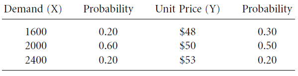

← Back to Index
Example 63 (Slide 211)
211
Example
Consider the BMC’s transmission-housing project. If the unit sales (X) and unit price (Y) were to
vary with the following probabilities, determine the NPW probability distribution. Here we assume
the situation where both random variables are independent. (observing a typical outcome for random
variable X does not have any influence on predicting the outcome for random variable Y)
